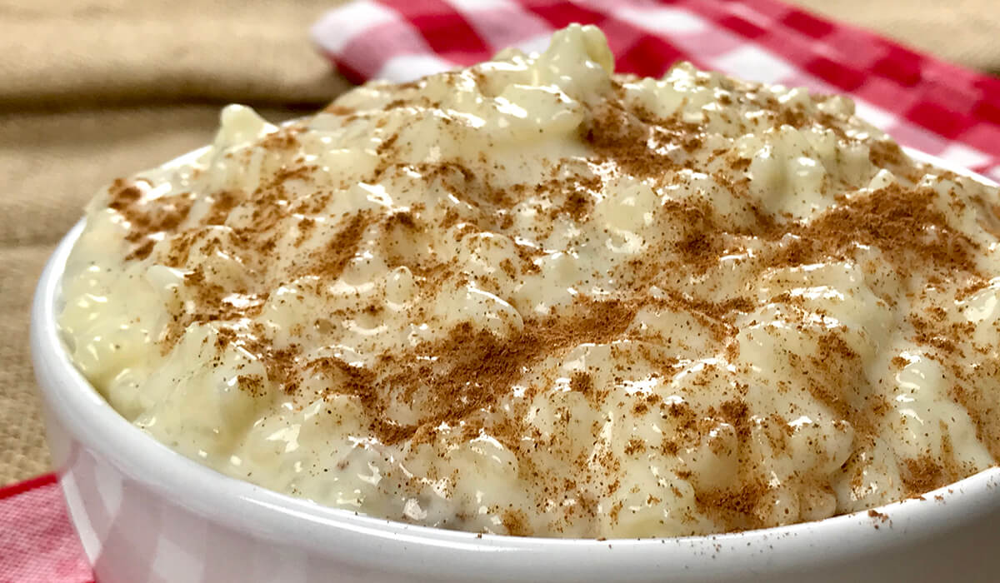

Double the recipe, trust me.
Ingredients
- 1 cup short grain rice
- 2 1/2 cups water
- a pinch of salt
- powdered cinnamon to taste
- 1 tsp vanilla extract
- 1 can sweetened condensed milk
- 1 can evaporated milk
Steps
- Whisk together the cans of condensed and evaporated milk and add the vanilla. Put in fridge.
- In a saucepan, mix the water, rice, a couple shakes of cinnamon, and the salt. Bring to a boil.
- Reduce the heat, cover and simmer until the rice is tender and the water is mostly absorbed.
- When the rice is done, stir in the milk mixture.
- Cook uncovered over medium low heat. Keep stirring so that it doesn't stick.
- Once the pudding is thick and you can see the grains of rice, remove from heat.
- Put the pudding into a bowl, sprinkle it with cinnamon and chill in the fridge for at least one hour.
Return to top
Home